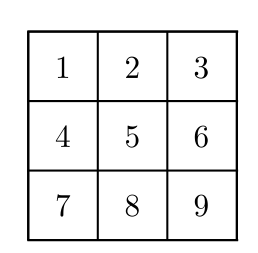
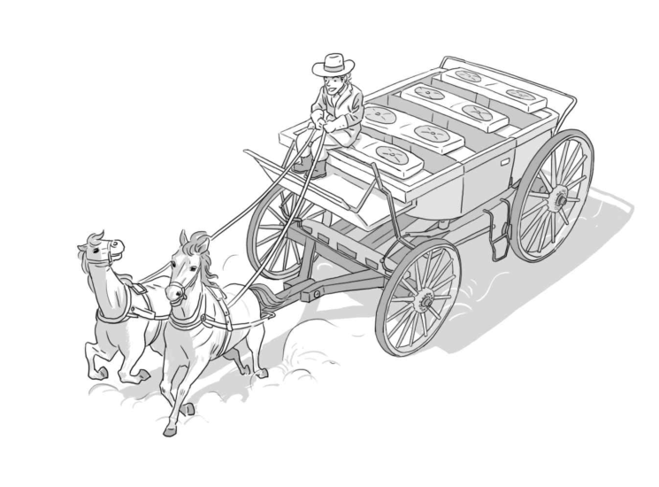
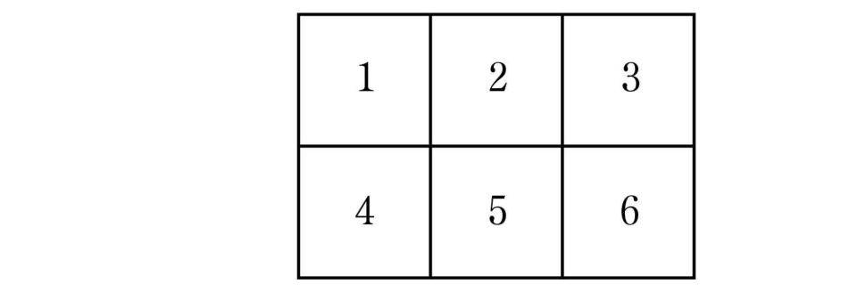

1. 2019년 3월 가형 10번 · 3점 · 고1 범위 · 경우의 수 · G2M10-01#7
원본 (내부용)그림과 같이 한 줄에 $3$개씩 모두 $6$개의 좌석이 있는 케이블카가 있다. 두 학생 $\mathrm{A}$, $\mathrm{B}$를 포함한 $5$명의 학생이 이 케이블카에 탑승하여 $\mathrm{A}$, $\mathrm{B}$는 같은 줄의 좌석에 앉고 나머지 세 명은 맞은편 줄의 좌석에 앉는 경우의 수는? [3점]
① $48$② $54$③ $60$④ $66$⑤ $72$
원본 정답 ⑤
원본 풀이 (내부용)[출제의도] 곱의 법칙과 순열을 이용하여 실생활 문제를 해결한다.
A, B가 앉는 줄을 선택하는 경우의 수는 2, 한 줄에 놓인 3개의 좌석에서 2개의 좌석을 택하여 앉는 경우의 수는 \({}_3P_2=3\times2=6\)이다. 그러므로 A, B가 같은 줄의 좌석에 앉는 경우의 수는 \(2\times6=12\)이다.
나머지 세 명이 앉던 줄의 좌석에 앉는 경우의 수는 \(3!=6\)이다. 따라서 구하는 경우의 수는
\(
12\times6=72
\)
이다.
생성기 숫자판 1/6 · G2M10-01#7한 줄에 $4$개씩 두 줄로 모두 $8$개의 좌석이 있는 케이블카가 있습니다. 두 학생 $\mathrm{A}$, $\mathrm{B}$를 포함한 $5$명의 학생이 이 케이블카에 탑승하여 $\mathrm{A}$, $\mathrm{B}$는 같은 줄의 좌석에 앉고 나머지 $3$명은 맞은편 줄의 좌석에 앉는 경우의 수로 옳은 것을 고르세요.
① $528$② $552$③ $576$④ $600$⑤ $624$
정답③ $576$ $\mathrm{A}$, $\mathrm{B}$가 앉을 줄을 고르는 경우의 수는 $2$ 그 줄의 $4$개의 좌석 중 두 자리에 $\mathrm{A}$, $\mathrm{B}$가 앉는 경우의 수는 ${}_{4}\mathrm{P}_{2}=12$ 맞은편 줄의 $4$개의 좌석에 나머지 $3$명이 앉는 경우의 수는 ${}_{4}\mathrm{P}_{3}=24$ 따라서 구하는 경우의 수는 $2\times 12\times 24=576$
숫자: 원본 3 6 5 → 쌍둥이 4 8 5 3 · 같은 수: 3 5
생성기 숫자판 2/6 · G2M10-01#7한 줄에 $8$개씩 두 줄로 모두 $16$개의 좌석이 있는 케이블카가 있습니다. 두 학생 $\mathrm{A}$, $\mathrm{B}$를 포함한 $6$명의 학생이 이 케이블카에 탑승하여 $\mathrm{A}$, $\mathrm{B}$는 같은 줄의 좌석에 앉고 나머지 $4$명은 맞은편 줄의 좌석에 앉는 경우의 수로 옳은 것을 고르세요.
① $188112$② $188136$③ $188160$④ $188184$⑤ $188208$
정답③ $188160$ $\mathrm{A}$, $\mathrm{B}$가 앉을 줄을 고르는 경우의 수는 $2$ 그 줄의 $8$개의 좌석 중 두 자리에 $\mathrm{A}$, $\mathrm{B}$가 앉는 경우의 수는 ${}_{8}\mathrm{P}_{2}=56$ 맞은편 줄의 $8$개의 좌석에 나머지 $4$명이 앉는 경우의 수는 ${}_{8}\mathrm{P}_{4}=1680$ 따라서 구하는 경우의 수는 $2\times 56\times 1680=188160$
숫자: 원본 3 6 5 → 쌍둥이 8 16 6 4 · 같은 수: 6
생성기 숫자판 3/6 · G2M10-01#7한 줄에 $9$개씩 두 줄로 모두 $18$개의 좌석이 있는 케이블카가 있습니다. 두 학생 $\mathrm{A}$, $\mathrm{B}$를 포함한 $7$명의 학생이 이 케이블카에 탑승하여 $\mathrm{A}$, $\mathrm{B}$는 같은 줄의 좌석에 앉고 나머지 $5$명은 맞은편 줄의 좌석에 앉는 경우의 수로 옳은 것을 고르세요.
① $2177280$② $2177304$③ $2177328$④ $2177352$⑤ $2177376$
정답① $2177280$ $\mathrm{A}$, $\mathrm{B}$가 앉을 줄을 고르는 경우의 수는 $2$ 그 줄의 $9$개의 좌석 중 두 자리에 $\mathrm{A}$, $\mathrm{B}$가 앉는 경우의 수는 ${}_{9}\mathrm{P}_{2}=72$ 맞은편 줄의 $9$개의 좌석에 나머지 $5$명이 앉는 경우의 수는 ${}_{9}\mathrm{P}_{5}=15120$ 따라서 구하는 경우의 수는 $2\times 72\times 15120=2177280$
숫자: 원본 3 6 5 → 쌍둥이 9 18 7 5 · 같은 수: 5
생성기 숫자판 4/6 · G2M10-01#7한 줄에 $6$개씩 두 줄로 모두 $12$개의 좌석이 있는 케이블카가 있습니다. 두 학생 $\mathrm{A}$, $\mathrm{B}$를 포함한 $8$명의 학생이 이 케이블카에 탑승하여 $\mathrm{A}$, $\mathrm{B}$는 같은 줄의 좌석에 앉고 나머지 $6$명은 맞은편 줄의 좌석에 앉는 경우의 수로 옳은 것을 고르세요.
① $43152$② $43176$③ $43200$④ $43224$⑤ $43248$
정답③ $43200$ $\mathrm{A}$, $\mathrm{B}$가 앉을 줄을 고르는 경우의 수는 $2$ 그 줄의 $6$개의 좌석 중 두 자리에 $\mathrm{A}$, $\mathrm{B}$가 앉는 경우의 수는 ${}_{6}\mathrm{P}_{2}=30$ 맞은편 줄의 $6$개의 좌석에 나머지 $6$명이 앉는 경우의 수는 ${}_{6}\mathrm{P}_{6}=720$ 따라서 구하는 경우의 수는 $2\times 30\times 720=43200$
숫자: 원본 3 6 5 → 쌍둥이 6 12 8 6 · 같은 수: 6
생성기 숫자판 5/6 · G2M10-01#7한 줄에 $3$개씩 두 줄로 모두 $6$개의 좌석이 있는 케이블카가 있습니다. 두 학생 $\mathrm{A}$, $\mathrm{B}$를 포함한 $4$명의 학생이 이 케이블카에 탑승하여 $\mathrm{A}$, $\mathrm{B}$는 같은 줄의 좌석에 앉고 나머지 $2$명은 맞은편 줄의 좌석에 앉는 경우의 수로 옳은 것을 고르세요.
① $48$② $54$③ $60$④ $66$⑤ $72$
정답⑤ $72$ $\mathrm{A}$, $\mathrm{B}$가 앉을 줄을 고르는 경우의 수는 $2$ 그 줄의 $3$개의 좌석 중 두 자리에 $\mathrm{A}$, $\mathrm{B}$가 앉는 경우의 수는 ${}_{3}\mathrm{P}_{2}=6$ 맞은편 줄의 $3$개의 좌석에 나머지 $2$명이 앉는 경우의 수는 ${}_{3}\mathrm{P}_{2}=6$ 따라서 구하는 경우의 수는 $2\times 6\times 6=72$
숫자: 원본 3 6 5 → 쌍둥이 3 6 4 2 · 같은 수: 3 6
생성기 숫자판 6/6 · G2M10-01#7한 줄에 $5$개씩 두 줄로 모두 $10$개의 좌석이 있는 케이블카가 있습니다. 두 학생 $\mathrm{A}$, $\mathrm{B}$를 포함한 $4$명의 학생이 이 케이블카에 탑승하여 $\mathrm{A}$, $\mathrm{B}$는 같은 줄의 좌석에 앉고 나머지 $2$명은 맞은편 줄의 좌석에 앉는 경우의 수로 옳은 것을 고르세요.
① $728$② $752$③ $776$④ $800$⑤ $824$
정답④ $800$ $\mathrm{A}$, $\mathrm{B}$가 앉을 줄을 고르는 경우의 수는 $2$ 그 줄의 $5$개의 좌석 중 두 자리에 $\mathrm{A}$, $\mathrm{B}$가 앉는 경우의 수는 ${}_{5}\mathrm{P}_{2}=20$ 맞은편 줄의 $5$개의 좌석에 나머지 $2$명이 앉는 경우의 수는 ${}_{5}\mathrm{P}_{2}=20$ 따라서 구하는 경우의 수는 $2\times 20\times 20=800$
숫자: 원본 3 6 5 → 쌍둥이 5 10 4 2 · 같은 수: 5
2. 2019년 3월 가형 14번 · 4점 · 고1 범위 · 경우의 수 · 4점 쌍둥이
원본 (내부용)그림과 같이 $9$개의 칸으로 나누어진 정사각형의 각 칸에 $1$부터 $9$까지의 자연수가 적혀 있다. $1$ $2$ $3$ $4$ $5$ $6$ $7$ $8$ $9$ 이 $9$개의 숫자 중 다음 조건을 만족시키도록 $2$개의 숫자를 선택하려고 한다. (가) 선택한 $2$개의 숫자는 서로 다른 가로줄에 있다. (나) 선택한 $2$개의 숫자는 서로 다른 세로줄에 있다. 예를 들어, 숫자 $1$과 $5$를 선택하는 것은 조건을 만족시키지만, 숫자 $3$과 $9$를 선택하는 것은 조건을 만족시키지 않는다. 조건을 만족시키도록 $2$개의 숫자를 선택하는 경우의 수는? [4점]

① $9$② $12$③ $15$④ $18$⑤ $21$
원본 정답 ④
원본 풀이 (내부용)[출제의도] 곱의 법칙과 조합을 이용하여 숫자를 선택하는 경우의 수를 구한다.
3개의 가로줄 중 2개의 가로줄을 택하는 경우의 수는
\(
{}_3C_2=3
\)
택한 2개의 가로줄 중 한 가로줄에서 1개의 숫자를 선택하는 경우의 수는 \({}_3C_1=3\)이고, 조건 (가)로부터 나머지 한 가로줄에서 이미 선택한 숫자와 다른 세로줄에 있는 1개의 숫자를 선택하는 경우의 수는
\(
{}_2C_1=2
\)
따라서 조건을 만족시키도록 2개의 숫자를 선택하는 경우의 수는
\(
3\times3\times2=18
\)
이다.
쌍둥이 1/5 · 4점 쌍둥이가로 2줄, 세로 6줄로 나뉜 12칸에 1부터 12까지 차례로 적혀 있습니다. 숫자 두 개를 골랐을 때 서로 다른 가로줄과 서로 다른 세로줄에 놓이는 선택의 경우의 수를 구하세요.
① $26$② $28$③ $30$④ $32$⑤ $34$
정답③ $30$ 전체 선택은 $\binom{12}{2}=66$가지입니다. 같은 가로줄 쌍은 $2\binom62=30$가지이고 같은 세로줄 쌍은 $6\binom22=6$가지입니다. 따라서 서로 다른 행과 열을 쓰는 쌍은 $66-30-6=30$가지입니다.
쌍둥이 2/5 · 4점 쌍둥이가로 $3$줄, 세로 $4$줄의 $12$개의 칸으로 나누어진 직사각형의 칸에 첫째 가로줄부터 왼쪽에서 오른쪽으로 $1$부터 $12$까지의 자연수가 차례로 적혀 있습니다. 이 $12$개의 숫자 중 다음 조건을 만족시키도록 $2$개의 숫자를 선택하려고 합니다. (가) 선택한 $2$개의 숫자는 서로 다른 가로줄에 있습니다. (나) 선택한 $2$개의 숫자는 서로 다른 세로줄에 있습니다. 예를 들어, 숫자 $1$과 $6$을 선택하는 것은 조건을 만족시키지만, 숫자 $4$와 $12$를 선택하는 것은 조건을 만족시키지 않습니다. 조건을 만족시키도록 $2$개의 숫자를 선택하는 경우의 수로 옳은 것을 고르세요.
① $24$② $27$③ $30$④ $33$⑤ $36$
정답⑤ $36$ $12$개 중 $2$개를 고르는 경우의 수는 ${}_{12}\mathrm{C}_{2}=66$ 같은 가로줄에서 고르는 경우는 $3\times{}_{4}\mathrm{C}_{2}=18$, 같은 세로줄에서 고르는 경우는 $4\times{}_{3}\mathrm{C}_{2}=12$ 따라서 $66-18-12=36$
쌍둥이 3/5 · 4점 쌍둥이가로 $4$줄, 세로 $4$줄의 $16$개의 칸으로 나누어진 직사각형의 칸에 첫째 가로줄부터 왼쪽에서 오른쪽으로 $1$부터 $16$까지의 자연수가 차례로 적혀 있습니다. 이 $16$개의 숫자 중 다음 조건을 만족시키도록 $2$개의 숫자를 선택하려고 합니다. (가) 선택한 $2$개의 숫자는 서로 다른 가로줄에 있습니다. (나) 선택한 $2$개의 숫자는 서로 다른 세로줄에 있습니다. 예를 들어, 숫자 $1$과 $6$을 선택하는 것은 조건을 만족시키지만, 숫자 $4$와 $16$을 선택하는 것은 조건을 만족시키지 않습니다. 조건을 만족시키도록 $2$개의 숫자를 선택하는 경우의 수로 옳은 것을 고르세요.
① $72$② $75$③ $78$④ $81$⑤ $84$
정답① $72$ $16$개 중 $2$개를 고르는 경우의 수는 ${}_{16}\mathrm{C}_{2}=120$ 같은 가로줄에서 고르는 경우는 $4\times{}_{4}\mathrm{C}_{2}=24$, 같은 세로줄에서 고르는 경우는 $4\times{}_{4}\mathrm{C}_{2}=24$ 따라서 $120-24-24=72$
쌍둥이 4/5 · 4점 쌍둥이가로 $2$줄, 세로 $5$줄의 $10$개의 칸으로 나누어진 직사각형의 칸에 첫째 가로줄부터 왼쪽에서 오른쪽으로 $1$부터 $10$까지의 자연수가 차례로 적혀 있습니다. 이 $10$개의 숫자 중 다음 조건을 만족시키도록 $2$개의 숫자를 선택하려고 합니다. (가) 선택한 $2$개의 숫자는 서로 다른 가로줄에 있습니다. (나) 선택한 $2$개의 숫자는 서로 다른 세로줄에 있습니다. 예를 들어, 숫자 $1$과 $7$을 선택하는 것은 조건을 만족시키지만, 숫자 $5$와 $10$을 선택하는 것은 조건을 만족시키지 않습니다. 조건을 만족시키도록 $2$개의 숫자를 선택하는 경우의 수로 옳은 것을 고르세요.
① $17$② $20$③ $23$④ $26$⑤ $29$
정답② $20$ $10$개 중 $2$개를 고르는 경우의 수는 ${}_{10}\mathrm{C}_{2}=45$ 같은 가로줄에서 고르는 경우는 $2\times{}_{5}\mathrm{C}_{2}=20$, 같은 세로줄에서 고르는 경우는 $5\times{}_{2}\mathrm{C}_{2}=5$ 따라서 $45-20-5=20$
쌍둥이 5/5 · 4점 쌍둥이가로 3줄, 세로 5줄로 나뉜 15칸에 1부터 15까지 차례로 적혀 있습니다. 숫자 두 개를 골랐을 때 서로 다른 가로줄과 서로 다른 세로줄에 놓이는 선택의 경우의 수를 구하세요.
① $54$② $57$③ $60$④ $63$⑤ $66$
정답③ $60$ 전체 두 숫자 선택은 $\binom{15}{2}=105$가지입니다. 같은 가로줄 선택은 $3\binom52=30$가지이고, 같은 세로줄 선택은 $5\binom32=15$가지입니다. 두 사건은 두 칸이 같아야만 겹치므로 겹치는 쌍은 없습니다. 따라서 조건을 만족하는 수는 $105-30-15=60$입니다.
3. 2019년 3월 가형 24번 · 3점 · 고1 범위 · 경우의 수 · G2H-05b#10
원본 (내부용)집합 $X= \{ 1,2,3,4 \}$일 때 함수 $f:X \to X$ 중에서 집합 $X$의 모든 원소 $x$에 대하여 $x+f(x)\ge 4$를 만족시키는 함수 $f$의 개수를 구하시오. [3점]
원본 정답 96
원본 풀이 (내부용)[출제의도] 함수의 정의를 이용하여 조건을 만족시키는 경우의 수를 구한다.
\(x=1\)일 때 \(f(1)\)의 값이 될 수 있는 것은 \(3,4\)로 경우의 수는 2이다.
\(x=2\)일 때 \(f(2)\)의 값이 될 수 있는 것은 \(2,3,4\)로 경우의 수는 3이다.
\(x=3\)일 때 \(f(3)\)의 값이 될 수 있는 것은 \(1,2,3,4\)로 경우의 수는 4이다.
\(x=4\)일 때 \(f(4)\)의 값이 될 수 있는 것은 \(1,2,3,4\)로 경우의 수는 4이다.
따라서 구하는 경우의 수는
\(
2\times3\times4\times4=96
\)
이다.
생성기 숫자판 1/6 · G2H-05b#10집합 $X=\left\{8,\ 9,\ 10,\ 11,\ 12\right\}$일 때, 함수 $f:X\to X$ 중에서 집합 $X$의 모든 원소 $x$에 대하여 $x+f\left(x\right)\ge 17$을 만족시키는 함수 $f$의 개수를 구하세요.
정답$2500$ $f\left(8\right)\ge 9$이므로 $f\left(8\right)$이 될 수 있는 값은 $4$가지 $f\left(9\right)\ge 8$이므로 $f\left(9\right)$가 될 수 있는 값은 $5$가지 $f\left(10\right)\ge 7$이므로 $f\left(10\right)$이 될 수 있는 값은 $5$가지 $f\left(11\right)\ge 6$이므로 $f\left(11\right)$이 될 수 있는 값은 $5$가지 $f\left(12\right)\ge 5$이므로 $f\left(12\right)$가 될 수 있는 값은 $5$가지 따라서 함수의 개수는 $4\times 5\times 5\times 5\times 5=2500$
숫자: 원본 1 2 3 4 4 → 쌍둥이 8 9 10 11 12 17
생성기 숫자판 2/6 · G2H-05b#10집합 $X=\left\{10,\ 11,\ 12\right\}$일 때, 함수 $f:X\to X$ 중에서 집합 $X$의 모든 원소 $x$에 대하여 $x+f\left(x\right)\ge 21$을 만족시키는 함수 $f$의 개수를 구하세요.
정답$18$ $f\left(10\right)\ge 11$이므로 $f\left(10\right)$이 될 수 있는 값은 $2$가지 $f\left(11\right)\ge 10$이므로 $f\left(11\right)$이 될 수 있는 값은 $3$가지 $f\left(12\right)\ge 9$이므로 $f\left(12\right)$가 될 수 있는 값은 $3$가지 따라서 함수의 개수는 $2\times 3\times 3=18$
숫자: 원본 1 2 3 4 4 → 쌍둥이 10 11 12 21
생성기 숫자판 3/6 · G2H-05b#10집합 $X=\left\{7,\ 8,\ 9,\ 10\right\}$일 때, 함수 $f:X\to X$ 중에서 집합 $X$의 모든 원소 $x$에 대하여 $x+f\left(x\right)\ge 17$을 만족시키는 함수 $f$의 개수를 구하세요.
정답$24$ $f\left(7\right)\ge 10$이므로 $f\left(7\right)$이 될 수 있는 값은 $1$가지 $f\left(8\right)\ge 9$이므로 $f\left(8\right)$이 될 수 있는 값은 $2$가지 $f\left(9\right)\ge 8$이므로 $f\left(9\right)$가 될 수 있는 값은 $3$가지 $f\left(10\right)\ge 7$이므로 $f\left(10\right)$이 될 수 있는 값은 $4$가지 따라서 함수의 개수는 $1\times 2\times 3\times 4=24$
숫자: 원본 1 2 3 4 4 → 쌍둥이 7 8 9 10 17
생성기 숫자판 4/6 · G2H-05b#10집합 $X=\left\{8,\ 9,\ 10\right\}$일 때, 함수 $f:X\to X$ 중에서 집합 $X$의 모든 원소 $x$에 대하여 $x+f\left(x\right)\ge 18$을 만족시키는 함수 $f$의 개수를 구하세요.
정답$6$ $f\left(8\right)\ge 10$이므로 $f\left(8\right)$이 될 수 있는 값은 $1$가지 $f\left(9\right)\ge 9$이므로 $f\left(9\right)$가 될 수 있는 값은 $2$가지 $f\left(10\right)\ge 8$이므로 $f\left(10\right)$이 될 수 있는 값은 $3$가지 따라서 함수의 개수는 $1\times 2\times 3=6$
숫자: 원본 1 2 3 4 4 → 쌍둥이 8 9 10 18
생성기 숫자판 5/6 · G2H-05b#10집합 $X=\left\{6,\ 7,\ 8\right\}$일 때, 함수 $f:X\to X$ 중에서 집합 $X$의 모든 원소 $x$에 대하여 $x+f\left(x\right)\ge 14$를 만족시키는 함수 $f$의 개수를 구하세요.
정답$6$ $f\left(6\right)\ge 8$이므로 $f\left(6\right)$이 될 수 있는 값은 $1$가지 $f\left(7\right)\ge 7$이므로 $f\left(7\right)$이 될 수 있는 값은 $2$가지 $f\left(8\right)\ge 6$이므로 $f\left(8\right)$이 될 수 있는 값은 $3$가지 따라서 함수의 개수는 $1\times 2\times 3=6$
숫자: 원본 1 2 3 4 4 → 쌍둥이 6 7 8 14
생성기 숫자판 6/6 · G2H-05b#10집합 $X=\left\{12,\ 13,\ 14\right\}$일 때, 함수 $f:X\to X$ 중에서 집합 $X$의 모든 원소 $x$에 대하여 $x+f\left(x\right)\ge 26$을 만족시키는 함수 $f$의 개수를 구하세요.
정답$6$ $f\left(12\right)\ge 14$이므로 $f\left(12\right)$가 될 수 있는 값은 $1$가지 $f\left(13\right)\ge 13$이므로 $f\left(13\right)$이 될 수 있는 값은 $2$가지 $f\left(14\right)\ge 12$이므로 $f\left(14\right)$가 될 수 있는 값은 $3$가지 따라서 함수의 개수는 $1\times 2\times 3=6$
숫자: 원본 1 2 3 4 4 → 쌍둥이 12 13 14 26
4. 2019년 3월 나형 28번 · 4점 · 고1 범위 · 경우의 수 · 4점 쌍둥이
원본 (내부용)어느 관광지에서 $7$명의 관광객 $\mathrm{A}$, $\mathrm{B}$, $\mathrm{C}$, $\mathrm{D}$, $\mathrm{E}$, $\mathrm{F}$, $\mathrm{G}$가 마차를 타려고 한다. 그림과 같이 이 마차에는 $4$개의 $2$인용 의자가 있고, 마부는 가장 앞에 있는 $2$인용 의자의 오른쪽 좌석에 앉는다. $7$명의 관광객이 다음 조건을 만족시키도록 비어 있는 $7$개의 좌석에 앉는 경우의 수를 구하시오. [4점] (가) $\mathrm{A}$와 $\mathrm{B}$는 같은 $2$인용 의자에 이웃하여 앉는다. (나) $\mathrm{C}$와 $\mathrm{D}$는 같은 $2$인용 의자에 이웃하여 앉지 않는다.

원본 정답 576
원본 풀이 (내부용)[출제의도] 경우의 수를 구하는 실생활과 관련된 문제를 해결한다.
조건 (가)에서 A와 B가 같이 앉을 수 있는 2인용 의자는 마부가 앉아 있는 의자를 제외한 3개이고, 두 사람은 자리를 서로 바꿔 앉을 수 있으므로 A와 B가 앉는 경우의 수는
\(
3\times2!=6
\)
이다.
남은 5개의 좌석에 C와 D가 앉는 전체 경우의 수는
\(
{}_5P_2=20
\)
이다.
이때 C와 D가 같은 2인용 의자에 이웃하여 앉는 경우의 수를 구해 보자.
두 사람이 이웃하여 앉을 수 있는 의자는 A와 B가 앉아 있는 의자와 마부가 앉아 있는 의자를 제외한 나머지 2개이고, 두 사람은 서로 자리를 바꿔 앉을 수 있으므로 C와 D가 앉는 경우의 수는
\(
2\times2!=4
\)
이다.
따라서 조건 (나)에서 C와 D가 이웃하지 않도록 앉는 경우의 수는
\(
20-4=16
\)
이다.
남은 3개의 좌석에 E, F, G가 앉는 경우의 수는
\(
3!=6
\)
이다.
따라서 모든 경우의 수는
\(
6\times16\times6=576
\)
이다.
쌍둥이 1/5 · 4점 쌍둥이어느 관광지에서 $9$명의 관광객 $A,B,C,D,E,\ldots$가 마차를 타려고 한다. 마차에는 $5$개의 $2$인용 의자가 있고, 마부는 가장 앞 의자의 오른쪽 자리에 앉는다. 관광객들이 비어 있는 $9$개의 자리에 앉을 때, (가) $A,B$는 같은 의자에 앉고, (나) $C,D$는 같은 의자에 앉지 않는다. 이 조건을 만족하는 경우의 수를 구하시오. [4점]
정답$34560$ $A,B$가 함께 앉을 의자는 마부가 있는 의자를 제외한 $4$개이고, 좌우 순서는 $2$가지이다. 나머지 $7$명은 $(7)!$가지로 앉는다. 이 중 $C,D$가 같은 다른 의자에 앉는 경우는 각 배치마다 $3$개 의자 중 하나를 고르고 좌우 순서 $2$가지를 정한 뒤 나머지 $5$명을 배열하므로 $2(3)(5)!$가지이다. 따라서 경우의 수는 $2(4)\left[(7)!-2(3)(5)!\right]=34560$이다.
숫자: 원본 7 4 2 2 7 7 2 2 → 쌍둥이 9 5 2 9 · 같은 수: 2
쌍둥이 2/5 · 4점 쌍둥이어느 관광지에서 $11$명의 관광객 $A,B,C,D,E,\ldots$가 마차를 타려고 한다. 마차에는 $6$개의 $2$인용 의자가 있고, 마부는 가장 앞 의자의 오른쪽 자리에 앉는다. 관광객들이 비어 있는 $11$개의 자리에 앉을 때, (가) $A,B$는 같은 의자에 앉고, (나) $C,D$는 같은 의자에 앉지 않는다. 이 조건을 만족하는 경우의 수를 구하시오. [4점]
정답$3225600$ $A,B$가 함께 앉을 의자는 마부가 있는 의자를 제외한 $5$개이고, 좌우 순서는 $2$가지이다. 나머지 $9$명은 $(9)!$가지로 앉는다. 이 중 $C,D$가 같은 다른 의자에 앉는 경우는 각 배치마다 $4$개 의자 중 하나를 고르고 좌우 순서 $2$가지를 정한 뒤 나머지 $7$명을 배열하므로 $2(4)(7)!$가지이다. 따라서 경우의 수는 $2(5)\left[(9)!-2(4)(7)!\right]=3225600$이다.
숫자: 원본 7 4 2 2 7 7 2 2 → 쌍둥이 11 6 2 11 · 같은 수: 2
쌍둥이 3/5 · 4점 쌍둥이어느 관광지에서 $13$명의 관광객 $A,B,C,D,E,\ldots$가 마차를 타려고 한다. 마차에는 $7$개의 $2$인용 의자가 있고, 마부는 가장 앞 의자의 오른쪽 자리에 앉는다. 관광객들이 비어 있는 $13$개의 자리에 앉을 때, (가) $A,B$는 같은 의자에 앉고, (나) $C,D$는 같은 의자에 앉지 않는다. 이 조건을 만족하는 경우의 수를 구하시오. [4점]
정답$435456000$ $A,B$가 함께 앉을 의자는 마부가 있는 의자를 제외한 $6$개이고, 좌우 순서는 $2$가지이다. 나머지 $11$명은 $(11)!$가지로 앉는다. 이 중 $C,D$가 같은 다른 의자에 앉는 경우는 각 배치마다 $5$개 의자 중 하나를 고르고 좌우 순서 $2$가지를 정한 뒤 나머지 $9$명을 배열하므로 $2(5)(9)!$가지이다. 따라서 경우의 수는 $2(6)\left[(11)!-2(5)(9)!\right]=435456000$이다.
쌍둥이 4/5 · 4점 쌍둥이어느 관광지에서 $15$명의 관광객 $A,B,C,D,E,\ldots$가 마차를 타려고 합니다. 마차에는 $8$개의 $2$인용 의자가 있고, 마부는 가장 앞 의자의 오른쪽 자리에 앉습니다. 관광객들이 비어 있는 자리에 앉을 때, (가) $A,B$는 같은 의자에 앉고, (나) $C,D$는 같은 의자에 앉지 않는다. 이 조건을 만족하는 경우의 수를 구하세요.
정답$80472268800$ A,B가 같은 의자에 앉는 의자는 마차 앞자리를 빼고 선택하므로 7가지이고, 두 사람의 자리 배치는 2가지이다. C,D는 AB의 의자를 빼고 서로 다른 의자에 앉는다. 앞자리와 일반 의자의 좌석 수가 다름을 따지면 C,D의 자리 배치는 4(8-2)^2가지이다. 나머지 11명은 남은 11자리에 순서 있게 앉으므로 경우의 수는 2(8-1)·4(8-2)^2·(11)!=80472268800이다.
숫자: 원본 7 4 2 2 7 7 2 2 → 쌍둥이 15 8 2 · 같은 수: 2
쌍둥이 5/5 · 4점 쌍둥이어느 관광지에서 $17$명의 관광객 $A,B,C,D,E,\ldots$가 마차를 타려고 합니다. 마차에는 $9$개의 $2$인용 의자가 있고, 마부는 가장 앞 의자의 오른쪽 자리에 앉습니다. 관광객들이 비어 있는 자리에 앉을 때, (가) $A,B$는 같은 의자에 앉고, (나) $C,D$는 같은 의자에 앉지 않는다. 이 조건을 만족하는 경우의 수를 구하세요.
정답$19527937228800$ A,B가 같은 의자에 앉는 의자는 마차 앞자리를 빼고 선택하므로 8가지이고, 두 사람의 자리 배치는 2가지이다. C,D는 AB의 의자를 빼고 서로 다른 의자에 앉는다. 앞자리와 일반 의자의 좌석 수가 다름을 따지면 C,D의 자리 배치는 4(9-2)^2가지이다. 나머지 13명은 남은 13자리에 순서 있게 앉으므로 경우의 수는 2(9-1)·4(9-2)^2·(13)!=19527937228800이다.
숫자: 원본 7 4 2 2 7 7 2 2 → 쌍둥이 17 9 2 · 같은 수: 2
5. 2020년 3월 17번 · 4점 · 고1 범위 · 경우의 수 · 4점 쌍둥이
원본 (내부용)그림과 같이 크기가 같은 $6$개의 정사각형에 $1$부터 $6$까지의 자연수가 하나씩 적혀 있다. 서로 다른 $4$가지 색의 일부 또는 전부를 사용하여 다음 조건을 만족시키도록 $6$개의 정사각형에 색을 칠하는 경우의 수는? (단, 한 정사각형에 한 가지 색만을 칠한다.) [4점] (가)$1$이 적힌 정사각형과 $6$이 적힌 정사각형에는 같은 색을 칠한다. (나)변을 공유하는 두 정사각형에는 서로 다른 색을 칠한다.

① $72$② $84$③ $96$④ $108$⑤ $120$
원본 정답 ③
원본 풀이 (내부용)[출제의도] 곱의 법칙을 이용하여 색을 칠하는 경우의 수를 구하는 문제를 해결한다.
1이 적힌 정사각형과 6이 적힌 정사각형에 같은 색을 칠해야 하고, 변을 공유하는 두 정사각형에는 서로 다른 색을 칠하므로 1, 6, 2, 3, 5, 4가 적힌 정사각형의 순서로 색을 칠한다고 생각하자.
서로 다른 4가지 색의 일부 또는 전부를 사용하여 색을 칠하므로,
1이 적힌 정사각형에 칠할 수 있는 색은 4가지이고,
6이 적힌 정사각형에는 1이 적힌 정사각형에 칠한 색과 같은 색을 칠해야 하므로 칠할 수 있는 색은 1가지이다.
2가 적힌 정사각형에는 1이 적힌 정사각형에 칠한 색을 제외한 3가지 색을 칠할 수 있다.
3이 적힌 정사각형에는 2, 6이 적힌 정사각형에 칠한 색을 제외한 2가지 색을 칠할 수 있다.
5가 적힌 정사각형에는 2, 6이 적힌 정사각형에 칠한 색을 제외한 2가지 색을 칠할 수 있다.
4가 적힌 정사각형에는 1, 5가 적힌 정사각형에 칠한 색을 제외한 2가지 색을 칠할 수 있다.
따라서 조건을 만족시키도록 색을 칠하는 경우의 수는
\(
4\times1\times3\times2\times2\times2=96
\)
쌍둥이 1/5 · 4점 쌍둥이그림과 같이 크기가 같은 $6$개의 정사각형에 $1$부터 $6$까지의 자연수가 하나씩 적혀 있습니다. 서로 다른 $4$가지 색의 일부 또는 전부를 사용하여 다음 조건을 만족시키도록 $6$개의 정사각형에 색을 칠하는 경우의 수로 옳은 것을 고르세요. (단, 한 정사각형에 한 가지 색만을 칠합니다.) (가) $3$이 적힌 정사각형과 $4$가 적힌 정사각형에는 같은 색을 칠합니다. (나) 변을 공유하는 두 정사각형에는 서로 다른 색을 칠합니다.
① $96$② $108$③ $120$④ $132$⑤ $144$
정답① $96$ $3$, $4$가 적힌 정사각형에 같은 색을 칠하고, 변을 공유하는 정사각형끼리 다른 색이 되도록 이웃한 칸부터 차례로 칠합니다. 칸마다 이미 칠한 이웃 칸의 색을 빼고 칠할 수 있는 색의 수를 곱하면(이웃 칸끼리 같은 색인 경우를 나누어 세면) 경우의 수는 $96$
쌍둥이 2/5 · 4점 쌍둥이그림과 같이 크기가 같은 $6$개의 정사각형에 $1$부터 $6$까지의 자연수가 하나씩 적혀 있습니다. 서로 다른 $4$가지 색의 일부 또는 전부를 사용하여 다음 조건을 만족시키도록 $6$개의 정사각형에 색을 칠하는 경우의 수로 옳은 것을 고르세요. (단, 한 정사각형에 한 가지 색만을 칠합니다.) (가) $1$이 적힌 정사각형과 $3$이 적힌 정사각형에는 같은 색을 칠합니다. (나) 변을 공유하는 두 정사각형에는 서로 다른 색을 칠합니다.
① $168$② $180$③ $192$④ $204$⑤ $216$
정답④ $204$ $1$, $3$이 적힌 정사각형에 같은 색을 칠하고, 변을 공유하는 정사각형끼리 다른 색이 되도록 이웃한 칸부터 차례로 칠합니다. 칸마다 이미 칠한 이웃 칸의 색을 빼고 칠할 수 있는 색의 수를 곱하면(이웃 칸끼리 같은 색인 경우를 나누어 세면) 경우의 수는 $204$
쌍둥이 3/5 · 4점 쌍둥이그림과 같이 크기가 같은 $6$개의 정사각형에 $1$부터 $6$까지의 자연수가 하나씩 적혀 있습니다. 서로 다른 $5$가지 색의 일부 또는 전부를 사용하여 다음 조건을 만족시키도록 $6$개의 정사각형에 색을 칠하는 경우의 수로 옳은 것을 고르세요. (단, 한 정사각형에 한 가지 색만을 칠합니다.) (가) $1$이 적힌 정사각형과 $6$이 적힌 정사각형에는 같은 색을 칠합니다. (나) 변을 공유하는 두 정사각형에는 서로 다른 색을 칠합니다.
① $528$② $540$③ $552$④ $564$⑤ $576$
정답② $540$ $1$, $6$이 적힌 정사각형에 같은 색을 칠하고, 변을 공유하는 정사각형끼리 다른 색이 되도록 이웃한 칸부터 차례로 칠합니다. 칸마다 이미 칠한 이웃 칸의 색을 빼고 칠할 수 있는 색의 수를 곱하면(이웃 칸끼리 같은 색인 경우를 나누어 세면) 경우의 수는 $540$
쌍둥이 4/5 · 4점 쌍둥이그림과 같이 크기가 같은 6개의 정사각형에 1부터 6까지의 자연수가 하나씩 적혀 있다. 서로 다른 5가지 색의 일부 또는 전부를 사용하여 6개의 정사각형에 색을 칠한다. (가) 1이 적힌 정사각형과 5이 적힌 정사각형에는 같은 색을 칠한다. (나) 변을 공유하는 두 정사각형에는 서로 다른 색을 칠한다. 가능한 경우의 수를 고르시오. [4점]
① $1000$② $1020$③ $1040$④ $1060$⑤ $1080$
정답③ $1040$ 색 배치를 위쪽 왼쪽부터 차례로 $(c_1,c_2,c_3;c_4,c_5,c_6)$라 두고, 각 색상 이름은 서로 구별한다. 조건 (가)는 지정한 두 위치의 색이 같다는 뜻이다. 격자에서 변을 공유하는 쌍은 $(1,2),(2,3),(4,5),(5,6),(1,4),(2,5),(3,6)$이다. 이 일곱 부등식과 $c_1=c_5$를 만족하는 5색 배치 전체를 전수 조사하면 $1040$개이다. 따라서 경우의 수는 $1040$이다.
쌍둥이 5/5 · 4점 쌍둥이그림과 같이 크기가 같은 6개의 정사각형에 1부터 6까지의 자연수가 하나씩 적혀 있다. 서로 다른 6가지 색의 일부 또는 전부를 사용하여 6개의 정사각형에 색을 칠한다. (가) 2이 적힌 정사각형과 6이 적힌 정사각형에는 같은 색을 칠한다. (나) 변을 공유하는 두 정사각형에는 서로 다른 색을 칠한다. 가능한 경우의 수를 고르시오. [4점]
① $3110$② $3130$③ $3150$④ $3170$⑤ $3190$
정답③ $3150$ 색 배치를 위쪽 왼쪽부터 차례로 $(c_1,c_2,c_3;c_4,c_5,c_6)$라 두고, 각 색상 이름은 서로 구별한다. 조건 (가)는 지정한 두 위치의 색이 같다는 뜻이다. 격자에서 변을 공유하는 쌍은 $(1,2),(2,3),(4,5),(5,6),(1,4),(2,5),(3,6)$이다. 이 일곱 부등식과 $c_2=c_6$을 만족하는 6색 배치 전체를 전수 조사하면 $3150$개이다. 따라서 경우의 수는 $3150$이다.
원본 (내부용)서로 다른 종류의 꽃 $4$송이와 같은 종류의 초콜릿 $2$개를 $5$명의 학생에게 남김없이 나누어 주려고 한다. 아무것도 받지 못하는 학생이 없도록 꽃과 초콜릿을 나누어 주는 경우의 수를 구하시오. [4점]
원본 정답 960
원본 풀이 (내부용)[출제의도] 순열과 조합을 이용하여 경우의 수를 구하는 문제를 해결한다.
꽃 4송이와 초콜릿 2개를 조건을 만족시키도록 5명의 학생에게 나누어 주는 경우는 다음과 같다.
(i) 1명의 학생이 초콜릿 2개를 받는 경우
초콜릿 2개를 받는 학생을 정하는 경우의 수는 5이고, 나머지 4명의 학생에게 꽃을 각각 한 송이씩 나누어 주는 경우의 수는
\(
4!=4\times3\times2\times1=24
\)
이므로 1명의 학생이 초콜릿 2개를 받는 경우의 수는
\(
5\times24=120
\)
(ii) 1명의 학생이 꽃 2송이를 받는 경우
4송이의 꽃 중에서 2송이의 꽃을 고르는 경우의 수는
\(
{}_4C_2=\frac{4\times3}{2\times1}=6
\)
이고, 이 2송이의 꽃을 받는 학생을 정하는 경우의 수는 5, 남은 두 송이의 꽃을 줄 학생을 정하는 경우의 수는
\(
{}_4P_2=4\times3=12
\)
이고 꽃을 받지 못한 2명의 학생에게 초콜릿을 각각 1개씩 주는 경우의 수가 1이므로 1명의 학생이 꽃 2송이를 받는 경우의 수는
\(
6\times5\times12\times1=360
\)
(iii) 1명의 학생이 꽃 1송이와 초콜릿 1개를 받는 경우
4송이의 꽃을 4명의 학생에게 각각 1송이씩 주는 경우의 수는
\(
{}_5P_4=5\times4\times3\times2=120
\)
이고 꽃을 받지 못한 학생에게 초콜릿 1개를 주고 꽃을 받은 학생 중 1명에게 남은 초콜릿 1개를 주는 경우의 수는
\(
{}_4C_1=4
\)
이므로 1명의 학생이 꽃 1송이와 초콜릿 1개를 받는 경우의 수는
\(
120\times4=480
\)
(i), (ii), (iii)에서 구하는 경우의 수는
\(
120+360+480=960
\)
쌍둥이 1/5 · 4점 쌍둥이서로 다른 종류의 꽃 $3$송이와 같은 종류의 초콜릿 $3$개를 $4$명의 학생에게 남김없이 나누어 주려고 합니다. 아무것도 받지 못하는 학생이 없도록 꽃과 초콜릿을 나누어 주는 경우의 수를 구하세요.
정답$388$ 꽃 $3$송이를 나누는 방법은 $4^{3}$가지, 초콜릿 $3$개를 $4$명에게 나누는 방법은 ${}_{4}\mathrm{H}_{3}=20$가지입니다. 특정한 $j$명이 아무것도 받지 못하는 경우는 나머지 $4-j$명에게만 나누는 경우이므로 $(4-j)^{3}\times{}_{4-j}\mathrm{H}_{3}$가지입니다. 포함과 배제의 원리로 아무것도 받지 못하는 학생이 있는 경우를 빼면 $1\times4^{3}\times20$ $-4\times3^{3}\times10$ $+6\times2^{3}\times4$ $-4\times1^{3}\times1$ $=388$
숫자: 원본 4 2 5 → 쌍둥이 3 3 4 · 같은 수: 4
쌍둥이 2/5 · 4점 쌍둥이서로 다른 종류의 꽃 $4$송이와 같은 종류의 초콜릿 $3$개를 $3$명의 학생에게 남김없이 나누어 주려고 합니다. 아무것도 받지 못하는 학생이 없도록 꽃과 초콜릿을 나누어 주는 경우의 수를 구하세요.
정답$621$ 꽃 $4$송이를 나누는 방법은 $3^{4}$가지, 초콜릿 $3$개를 $3$명에게 나누는 방법은 ${}_{3}\mathrm{H}_{3}=10$가지입니다. 특정한 $j$명이 아무것도 받지 못하는 경우는 나머지 $3-j$명에게만 나누는 경우이므로 $(3-j)^{4}\times{}_{3-j}\mathrm{H}_{3}$가지입니다. 포함과 배제의 원리로 아무것도 받지 못하는 학생이 있는 경우를 빼면 $1\times3^{4}\times10$ $-3\times2^{4}\times4$ $+3\times1^{4}\times1$ $=621$
숫자: 원본 4 2 5 → 쌍둥이 4 3 3 · 같은 수: 4
쌍둥이 3/5 · 4점 쌍둥이서로 다른 종류의 꽃 $5$송이와 같은 종류의 초콜릿 $1$개를 $3$명의 학생에게 남김없이 나누어 주려고 합니다. 아무것도 받지 못하는 학생이 없도록 꽃과 초콜릿을 나누어 주는 경우의 수를 구하세요.
정답$540$ 꽃 $5$송이를 나누는 방법은 $3^{5}$가지, 초콜릿 $1$개를 $3$명에게 나누는 방법은 ${}_{3}\mathrm{H}_{1}=3$가지입니다. 특정한 $j$명이 아무것도 받지 못하는 경우는 나머지 $3-j$명에게만 나누는 경우이므로 $(3-j)^{5}\times{}_{3-j}\mathrm{H}_{1}$가지입니다. 포함과 배제의 원리로 아무것도 받지 못하는 학생이 있는 경우를 빼면 $1\times3^{5}\times3$ $-3\times2^{5}\times2$ $+3\times1^{5}\times1$ $=540$
숫자: 원본 4 2 5 → 쌍둥이 5 1 3 · 같은 수: 5
쌍둥이 4/5 · 4점 쌍둥이서로 다른 꽃 3송이와 같은 초콜릿 4개를 4명의 학생에게 남김없이 나누어 줍니다. 아무것도 받지 못하는 학생이 없도록 나누는 경우의 수는?
① $852$② $854$③ $856$④ $858$⑤ $860$
정답③ $856$ 초콜릿 분배에서 빈 학생이 j명인 경우를 포함배제로 센다. 남은 4−j명에게 꽃 3송이를 주는 방법은 (4−j)^3이고 초콜릿 분배는 C(4+4−j−1,4−j−1)이다. 포함배제 합은 4³C(7,3)−4·3³C(6,2)+6·2³C(5,1)−4·1³C(4,0)이다. 계산하면 2240−1620+240−4=856이다.
숫자: 원본 4 2 5 → 쌍둥이 3 4 4 · 같은 수: 4
쌍둥이 5/5 · 4점 쌍둥이서로 다른 꽃 2송이와 같은 초콜릿 4개를 4명의 학생에게 남김없이 나누어 줍니다. 아무것도 받지 못하는 학생이 없도록 나누는 경우의 수는?
① $132$② $134$③ $136$④ $138$⑤ $140$
정답③ $136$ 빈 학생이 j명일 때 방법은 (4−j)^2 C(7−j,3)이다. 포함배제로 4²C(7,3)−4·3²C(6,3)+6·2²C(5,3)−4·1²C(4,3)=560−540+120−4이다. 따라서 경우의 수는 136이다.
숫자: 원본 4 2 5 → 쌍둥이 2 4 4 · 같은 수: 2 4
7. 2021년 3월 18번 · 4점 · 고1 범위 · 경우의 수 · 4점 쌍둥이
원본 (내부용)어느 학교에서는 ‘확률과 통계’, ‘미적분’, ‘기하’의 수학 과목 $3$개와 ‘물리학Ⅱ’, ‘화학Ⅱ’, ‘생명과학Ⅱ’, ‘지구과학Ⅱ’의 과학 과목 $4$개를 선택 교육 과정으로 운영한다. 두 학생 $\mathrm{A}$, $\mathrm{B}$가 이 $7$개의 과목 중에서 다음 조건을 만족시키도록 과목을 선택하려고 한다. ⦁$\mathrm{A}$, $\mathrm{B}$는 각자 $1$개 이상의 수학 과목을 포함한 $3$개의 과목을 선택한다. ⦁$\mathrm{A}$가 선택하는 $3$개의 과목과 $\mathrm{B}$가 선택하는 $3$개의 과목 중에서 서로 일치하는 과목의 개수는 $1$이다. 다음은 $\mathrm{A}$, $\mathrm{B}$가 과목을 선택하는 경우의 수를 구하는 과정이다. $\mathrm{A}$, $\mathrm{B}$가 선택하는 과목 중에서 서로 일치하는 과목이 수학 과목인 경우와 과학 과목인 경우로 나누어 구할 수 있다. (ⅰ)서로 일치하는 과목이 수학 과목일 때 $3$개의 수학 과목 중에서 $1$개를 선택하는 경우의 수는 $_{3} {\mathrm{C}}_{1}$$=3$ 위의 각 경우에 대하여 나머지 $6$개의 과목 중에서 $\mathrm{A}$가 $2$개를 선택하고, 나머지 $4$개의 과목 중에서 $\mathrm{B}$가 $2$개를 선택하는 경우의 수는 $\boxed{ (가) }$ 이때의 경우의 수는 $3 \times {\boxed{ (가) }}$ (ⅱ)서로 일치하는 과목이 과학 과목일 때 $4$개의 과학 과목 중에서 $1$개를 선택하는 경우의 수는 $_{4} \mathrm{C}_{1}$$=4$ 위의 각 경우에 대하여 나머지 $6$개의 과목 중에서 $\mathrm{A}$, $\mathrm{B}$는 수학 과목을 $1$개 이상 선택해야 하므로 다음 두 가지 경우로 나눌 수 있다. (ⅱ-1)$\mathrm{A}$, $\mathrm{B}$ 모두 수학 과목 $1$개와 과학 과목 $1$개를 선택하는 경우의 수는 $(_{3} \mathrm{C}_{1} \times_{3} \mathrm{C}_{1} ) \times (_{2} \mathrm{C}_{1} \times_{2} \mathrm{C}_{1} )$$=36$ (ⅱ-2)$\mathrm{A}$, $\mathrm{B}$ 중 한 명은 수학 과목 $2$개를 선택하고, 다른 한 명은 수학 과목 $1$개와 과학 과목 $1$개를 선택하는 경우의 수는 ${\boxed{ (나) }}$ 이때의 경우의 수는 $4 \times ( 36+ {\boxed{ (나) }} )$ (ⅰ), (ⅱ)에 의하여 구하는 경우의 수는 $3 \times {\boxed{ (가) }} +4 \times ( 36+ {\boxed{ (나) }} )$이다. 위의 (가), (나)에 알맞은 수를 각각 $p$, $q$라 할 때, $p+q$의 값은? [4점]
① $102$② $108$③ $114$④ $120$⑤ $126$
원본 정답 ②
원본 풀이 (내부용)[출제의도] 합의 법칙과 곱의 법칙, 조합을 이용하여 경우의 수를 구하는 과정을 추론한다.
\(A,B\)가 선택하는 과목 중에서 서로 일치하는 과목이 수학 과목인 경우와 과학 과목인 경우로 나누어 구할 수 있다.
**(i) 서로 일치하는 과목이 수학 과목일 때**
3개의 수학 과목 중에서 1개를 선택하는 경우의 수는
\(
{}_3C_1=3
\)
위의 각 경우에 대하여 나머지 6개의 과목 중에서 \(A\)가 2개를 선택하고, 나머지 4개의 과목 중에서 \(B\)가 2개를 선택하는 경우의 수는
\(
{}_6C_2\times{}_4C_2=90
\)
이때의 경우의 수는 \(3\times90\).
**(ii) 서로 일치하는 과목이 과학 과목일 때**
4개의 과학 과목 중에서 1개를 선택하는 경우의 수는
\(
{}_4C_1=4
\)
위의 각 경우에 대하여 나머지 6개의 과목 중에서 \(A,B\)는 수학 과목을 1개 이상 선택해야 하므로 다음 두 가지 경우로 나눌 수 있다.
**(ii-1)** \(A,B\) 모두 수학 과목 1개와 과학 과목 1개를 선택하는 경우의 수는
\(
({}_3C_1\times{}_3C_1)\times({}_2C_1\times{}_2C_1)=36
\)
**(ii-2)** \(A,B\) 중 한 명은 수학 과목 2개를 선택하고, 다른 한 명은 수학 과목 1개와 과학 과목 1개를 선택하는 경우의 수는 다음과 같다.
\(A,B\) 중 수학 과목 2개를 선택하는 학생을 택하는 경우의 수는 \({}_2C_1\), 이 학생이 3개의 수학 과목 중 2개를 선택하는 경우의 수는 \({}_3C_2\), 다른 한 명이 남아 있는 수학 과목 1개를 선택하는 경우의 수는 \({}_1C_1\)이다. 이 학생이 과학 과목 중 공통으로 선택한 과목을 제외한 3개의 과학 과목 중 1개를 선택하는 경우의 수는 \({}_3C_1\)이다.
따라서
\(
{}_2C_1\times{}_3C_2\times({}_1C_1\times{}_3C_1)=18
\)
위의 경우의 수는
\(
4\times(36+18)
\)
(i), (ii)에 의하여 구하는 경우의 수는
\(
3\times90+4\times(36+18)
\)
따라서 \(p=90,\ q=18\)이므로
\(
p+q=108
\)
쌍둥이 1/5 · 4점 쌍둥이한 학교에 수학 5과목과 과학 4과목이 있습니다. 두 학생이 각각 수학을 1과목 이상 포함해 3과목을 고르고, 서로 일치하는 과목은 정확히 1개입니다. 일치 과목이 수학일 때의 경우의 수를 p, 일치 과목이 과학일 때 한 학생이 수학 2과목을 고르고 다른 학생이 수학 1과목과 과학 1과목을 고르는 경우의 수를 q라 할 때 p+q는?
① $580$② $590$③ $600$④ $610$⑤ $620$
정답③ $600$ 공통 수학 과목을 정한 뒤 나머지 선택은 C(8,2)C(6,2)이므로 p=420이다. 공통 과학 과목을 고정하면 q=2·C(5,2)·3·3=180이다. p+q=600이다.
쌍둥이 2/5 · 4점 쌍둥이어느 학교에서는 수학 과목 $3$개와 과학 과목 $5$개를 선택 교육 과정으로 운영합니다. 두 학생 $A$, $B$가 이 $8$개의 과목 중에서 다음 조건을 만족시키도록 과목을 선택하려고 합니다. • $A$, $B$는 각자 $1$개 이상의 수학 과목을 포함한 $3$개의 과목을 선택합니다. • $A$가 선택하는 $3$개의 과목과 $B$가 선택하는 $3$개의 과목 중에서 서로 일치하는 과목의 개수는 $1$입니다. 다음은 $A$, $B$가 과목을 선택하는 경우의 수를 구하는 과정입니다. 서로 일치하는 과목이 수학 과목인 경우와 과학 과목인 경우로 나누어 구할 수 있습니다. (ⅰ) 서로 일치하는 과목이 수학 과목일 때, $3$개의 수학 과목 중에서 $1$개를 선택하는 경우의 수는 ${}_{3}\mathrm{C}_{1}=3$입니다. 위의 각 경우에 대하여 나머지 $7$개의 과목 중에서 $A$가 $2$개를 선택하고, 나머지 $5$개의 과목 중에서 $B$가 $2$개를 선택하는 경우의 수는 $\boxed{\text{(가)}}$이므로 이때의 경우의 수는 $3\times\boxed{\text{(가)}}$입니다. (ⅱ) 서로 일치하는 과목이 과학 과목일 때, $5$개의 과학 과목 중에서 $1$개를 선택하는 경우의 수는 ${}_{5}\mathrm{C}_{1}=5$입니다. 위의 각 경우에 대하여 나머지 $7$개의 과목 중에서 $A$, $B$는 수학 과목을 $1$개 이상 선택해야 하므로 다음 두 가지 경우로 나눌 수 있습니다. (ⅱ-1) $A$, $B$ 모두 수학 과목 $1$개와 과학 과목 $1$개를 선택하는 경우의 수는 $({}_{3}\mathrm{C}_{1}\times{}_{4}\mathrm{C}_{1})\times({}_{2}\mathrm{C}_{1}\times{}_{3}\mathrm{C}_{1})=72$입니다. (ⅱ-2) $A$, $B$ 중 한 명은 수학 과목 $2$개를 선택하고, 다른 한 명은 수학 과목 $1$개와 과학 과목 $1$개를 선택하는 경우의 수는 $\boxed{\text{(나)}}$이므로 이때의 경우의 수는 $5\times(72+\boxed{\text{(나)}})$입니다. (ⅰ), (ⅱ)에 의하여 구하는 경우의 수는 $3\times\boxed{\text{(가)}}+5\times(72+\boxed{\text{(나)}})$입니다. (가), (나)에 알맞은 수를 각각 $p$, $q$라 할 때, $p+q$의 값으로 옳은 것을 고르세요.
① $210$② $216$③ $222$④ $228$⑤ $234$
정답⑤ $234$ (가) $A$가 나머지 $7$개 중 $2$개, $B$가 $A$와 겹치지 않는 $5$개 중 $2$개를 고르므로 ${}_{7}\mathrm{C}_{2}\times{}_{5}\mathrm{C}_{2}=21\times10=210$ (나) 수학 $2$개를 고르는 학생을 정하는 경우 $2$가지, 그 학생이 수학 $3$개 중 $2$개를 고르는 경우 ${}_{3}\mathrm{C}_{2}=3$, 다른 학생이 남은 수학 $1$개 중 $1$개와 과학 $4$개 중 $1$개를 고르는 경우 $4$이므로 $2\times3\times4=24$ $p+q=210+24=234$
쌍둥이 3/5 · 4점 쌍둥이어느 학교에서는 수학 과목 $3$개와 과학 과목 $6$개를 선택 교육 과정으로 운영합니다. 두 학생 $A$, $B$가 이 $9$개의 과목 중에서 다음 조건을 만족시키도록 과목을 선택하려고 합니다. • $A$, $B$는 각자 $1$개 이상의 수학 과목을 포함한 $3$개의 과목을 선택합니다. • $A$가 선택하는 $3$개의 과목과 $B$가 선택하는 $3$개의 과목 중에서 서로 일치하는 과목의 개수는 $1$입니다. 다음은 $A$, $B$가 과목을 선택하는 경우의 수를 구하는 과정입니다. 서로 일치하는 과목이 수학 과목인 경우와 과학 과목인 경우로 나누어 구할 수 있습니다. (ⅰ) 서로 일치하는 과목이 수학 과목일 때, $3$개의 수학 과목 중에서 $1$개를 선택하는 경우의 수는 ${}_{3}\mathrm{C}_{1}=3$입니다. 위의 각 경우에 대하여 나머지 $8$개의 과목 중에서 $A$가 $2$개를 선택하고, 나머지 $6$개의 과목 중에서 $B$가 $2$개를 선택하는 경우의 수는 $\boxed{\text{(가)}}$이므로 이때의 경우의 수는 $3\times\boxed{\text{(가)}}$입니다. (ⅱ) 서로 일치하는 과목이 과학 과목일 때, $6$개의 과학 과목 중에서 $1$개를 선택하는 경우의 수는 ${}_{6}\mathrm{C}_{1}=6$입니다. 위의 각 경우에 대하여 나머지 $8$개의 과목 중에서 $A$, $B$는 수학 과목을 $1$개 이상 선택해야 하므로 다음 두 가지 경우로 나눌 수 있습니다. (ⅱ-1) $A$, $B$ 모두 수학 과목 $1$개와 과학 과목 $1$개를 선택하는 경우의 수는 $({}_{3}\mathrm{C}_{1}\times{}_{5}\mathrm{C}_{1})\times({}_{2}\mathrm{C}_{1}\times{}_{4}\mathrm{C}_{1})=120$입니다. (ⅱ-2) $A$, $B$ 중 한 명은 수학 과목 $2$개를 선택하고, 다른 한 명은 수학 과목 $1$개와 과학 과목 $1$개를 선택하는 경우의 수는 $\boxed{\text{(나)}}$이므로 이때의 경우의 수는 $6\times(120+\boxed{\text{(나)}})$입니다. (ⅰ), (ⅱ)에 의하여 구하는 경우의 수는 $3\times\boxed{\text{(가)}}+6\times(120+\boxed{\text{(나)}})$입니다. (가), (나)에 알맞은 수를 각각 $p$, $q$라 할 때, $p+q$의 값으로 옳은 것을 고르세요.
① $450$② $456$③ $462$④ $468$⑤ $474$
정답① $450$ (가) $A$가 나머지 $8$개 중 $2$개, $B$가 $A$와 겹치지 않는 $6$개 중 $2$개를 고르므로 ${}_{8}\mathrm{C}_{2}\times{}_{6}\mathrm{C}_{2}=28\times15=420$ (나) 수학 $2$개를 고르는 학생을 정하는 경우 $2$가지, 그 학생이 수학 $3$개 중 $2$개를 고르는 경우 ${}_{3}\mathrm{C}_{2}=3$, 다른 학생이 남은 수학 $1$개 중 $1$개와 과학 $5$개 중 $1$개를 고르는 경우 $5$이므로 $2\times3\times5=30$ $p+q=420+30=450$
쌍둥이 4/5 · 4점 쌍둥이어느 학교에서는 수학 과목 $3$개와 과학 과목 $3$개를 선택 교육 과정으로 운영합니다. 두 학생 $A$, $B$가 이 $6$개의 과목 중에서 다음 조건을 만족시키도록 과목을 선택하려고 합니다. • $A$, $B$는 각자 $1$개 이상의 수학 과목을 포함한 $3$개의 과목을 선택합니다. • $A$가 선택하는 $3$개의 과목과 $B$가 선택하는 $3$개의 과목 중에서 서로 일치하는 과목의 개수는 $1$입니다. 다음은 $A$, $B$가 과목을 선택하는 경우의 수를 구하는 과정입니다. 서로 일치하는 과목이 수학 과목인 경우와 과학 과목인 경우로 나누어 구할 수 있습니다. (ⅰ) 서로 일치하는 과목이 수학 과목일 때, $3$개의 수학 과목 중에서 $1$개를 선택하는 경우의 수는 ${}_{3}\mathrm{C}_{1}=3$입니다. 위의 각 경우에 대하여 나머지 $5$개의 과목 중에서 $A$가 $2$개를 선택하고, 나머지 $3$개의 과목 중에서 $B$가 $2$개를 선택하는 경우의 수는 $\boxed{\text{(가)}}$이므로 이때의 경우의 수는 $3\times\boxed{\text{(가)}}$입니다. (ⅱ) 서로 일치하는 과목이 과학 과목일 때, $3$개의 과학 과목 중에서 $1$개를 선택하는 경우의 수는 ${}_{3}\mathrm{C}_{1}=3$입니다. 위의 각 경우에 대하여 나머지 $5$개의 과목 중에서 $A$, $B$는 수학 과목을 $1$개 이상 선택해야 하므로 다음 두 가지 경우로 나눌 수 있습니다. (ⅱ-1) $A$, $B$ 모두 수학 과목 $1$개와 과학 과목 $1$개를 선택하는 경우의 수는 $({}_{3}\mathrm{C}_{1}\times{}_{2}\mathrm{C}_{1})\times({}_{2}\mathrm{C}_{1}\times{}_{1}\mathrm{C}_{1})=12$입니다. (ⅱ-2) $A$, $B$ 중 한 명은 수학 과목 $2$개를 선택하고, 다른 한 명은 수학 과목 $1$개와 과학 과목 $1$개를 선택하는 경우의 수는 $\boxed{\text{(나)}}$이므로 이때의 경우의 수는 $3\times(12+\boxed{\text{(나)}})$입니다. (ⅰ), (ⅱ)에 의하여 구하는 경우의 수는 $3\times\boxed{\text{(가)}}+3\times(12+\boxed{\text{(나)}})$입니다. (가), (나)에 알맞은 수를 각각 $p$, $q$라 할 때, $p+q$의 값으로 옳은 것을 고르세요.
① $36$② $42$③ $48$④ $54$⑤ $60$
정답② $42$ (가) $A$가 나머지 $5$개 중 $2$개, $B$가 $A$와 겹치지 않는 $3$개 중 $2$개를 고르므로 ${}_{5}\mathrm{C}_{2}\times{}_{3}\mathrm{C}_{2}=10\times3=30$ (나) 수학 $2$개를 고르는 학생을 정하는 경우 $2$가지, 그 학생이 수학 $3$개 중 $2$개를 고르는 경우 ${}_{3}\mathrm{C}_{2}=3$, 다른 학생이 남은 수학 $1$개 중 $1$개와 과학 $2$개 중 $1$개를 고르는 경우 $2$이므로 $2\times3\times2=12$ $p+q=30+12=42$
쌍둥이 5/5 · 4점 쌍둥이한 학교에 수학 4과목과 과학 6과목이 있습니다. 두 학생이 각각 수학을 1과목 이상 포함해 3과목을 고르고, 서로 일치하는 과목은 정확히 1개입니다. 일치 과목이 수학일 때의 경우의 수를 p, 일치 과목이 과학일 때의 경우의 수 중 한 학생이 수학 2과목을 고르고 다른 학생이 수학 1과목과 과학 1과목을 고르는 경우의 수를 q라 할 때 p+q는?
① $856$② $866$③ $876$④ $886$⑤ $896$
정답③ $876$ 공통 과목이 수학일 때 그 과목을 고른 뒤 A의 나머지 2과목은 나머지 9개 중 C(9,2), B는 A와 겹치지 않게 나머지 7개 중 C(7,2)를 골라 p=756이다. 공통 과목이 과학으로 고정되었을 때 한 학생이 수학 2개를 고르는 방법은 C(4,2), 다른 학생은 남은 수학 2개 중 1개와 남은 과학 5개 중 1개를 고른다. 양쪽 순서를 고려해 q=2·6·2·5=120이다. p+q=876이다.
원본 (내부용)그림과 같이 좌석 번호가 적힌 $10$개의 의자가 배열되어 있다. 두 학생 $\mathrm{A}$, $\mathrm{B}$를 포함한 $5$명의 학생이 다음 규칙에 따라 $10$개의 의자 중에서 서로 다른 $5$개의 의자에 앉는 경우의 수는? [4점] (가)$\mathrm{A}$의 좌석 번호는 $24$ 이상이고, $\mathrm{B}$의 좌석 번호는 $14$ 이하이다. (나)$5$명의 학생 중에서 어느 두 학생도 좌석 번호의 차가 $1$이 되도록 앉지 않는다. (다)$5$명의 학생 중에서 어느 두 학생도 좌석 번호의 차가 $10$이 되도록 앉지 않는다.
① $54$② $60$③ $66$④ $72$⑤ $78$
그림·참고 단답형 ① $54$ ② $60$ ③ $66$ ④ $72$ ⑤ $78$ 단답형
원본 정답 ②
원본 풀이 (내부용)[출제의도] 순열과 조합을 이용하여 경우의 수를 구하는 문제를 해결한다.
그림과 같이 의자의 위치와 좌석 번호를 나타내고 각 가로줄을 1열, 2열이라고 하자.
좌석 배치 그림:
| 열 | 좌석 번호 |
|---|---|
| 1열 | 11, 12, 13, 14, 15, 16, 17 |
| 2열 | 23, 24, 25 (1열의 13, 14, 15 아래) |
규칙 (가)에 의해 A는 좌석 번호가 24 또는 25인 의자에 앉을 수 있고, B는 좌석 번호가 11, 12, 13 또는 14인 의자에 앉을 수 있다. 규칙 (나), (다)에 의해 어느 두 학생도 양옆 또는 앞뒤로 이웃하여 앉지 않는다.
5명의 학생이 앉을 수 있는 5개의 의자를 선택한 후 규칙 (가)에 의해 A, B가 앉고 남은 3개의 의자에 나머지 3명의 학생이 앉는 것으로 경우의 수를 구할 수 있다.
**(i) A가 좌석 번호 24인 의자에 앉을 때**
좌석 배치:
| 열 | 좌석 번호 |
|---|---|
| 1열 | 11, 12, 13, 14, 15, 16, 17 |
| 2열 | 23, A(24), 25 |
A가 좌석 번호가 24인 의자에 앉으면 나머지 4명의 학생은 규칙 (나), (다)에 의해 좌석 번호가 11, 13, 17인 의자에 각각 한 명씩 앉아야 한다.
이때 B는 규칙 (가)에 의해 좌석 번호가 11, 13인 2개의 의자 중 1개의 의자에 앉아야 하므로 B가 의자를 선택하여 앉는 경우의 수는
\(
{}_2C_1=2
\)
이다.
위의 각 경우에 대하여 A, B를 제외한 3명의 학생이 나머지 3개의 의자에 앉는 경우의 수는
\(
3!=3\times2\times1=6
\)
이다. 이때의 경우의 수는
\(
2\times6=12
\)
이다.
**(ii) A가 좌석 번호 25인 의자에 앉을 때**
좌석 배치:
| 열 | 좌석 번호 |
|---|---|
| 1열 | 11, 12, 13, 14, 15, 16, 17 |
| 2열 | 23, 24, A(25) |
A가 좌석 번호가 25인 의자에 앉으면 나머지 4명의 학생은 규칙 (나), (다)에 의해 좌석 번호가 11 또는 12인 의자 중 하나, 좌석 번호가 14인 의자, 좌석 번호가 23인 의자, 좌석 번호가 16 또는 17인 의자 중 하나에 각각 한 명씩 앉아야 한다.
좌석 번호가 11 또는 12인 의자 중 하나를 선택하고 ㉠ 좌석 번호가 16 또는 17인 의자 중 하나를 선택하는 경우의 수는
\(
{}_2C_1\times{}_2C_1=4
\)
이다.
위의 각 경우에 대하여 B는 규칙 (가)에 의해 ㉠에서 선택된 의자와 좌석 번호가 14인 의자 중 1개의 의자에 앉아야 하므로 B가 의자를 선택하여 앉는 경우의 수는
\(
{}_2C_1=2
\)
이다.
위의 각 경우에 대하여 A, B를 제외한 3명의 학생이 나머지 3개의 의자에 앉는 경우의 수는
\(
3!=3\times2\times1=6
\)
이다. 이때의 경우의 수는
\(
4\times2\times6=48
\)
이다.
(i), (ii)에서 구하는 경우의 수는
\(
12+48=60
\)
쌍둥이 1/5 · 4점 쌍둥이그림과 같이 좌석 번호가 적힌 $10$개의 의자가 배열되어 있습니다. 두 학생 $A$, $B$를 포함한 $5$명의 학생이 다음 규칙에 따라 $10$개의 의자 중에서 서로 다른 $5$개의 의자에 앉는 경우의 수로 옳은 것을 고르세요. (가) $A$의 좌석 번호는 $23$ 이상이고, $B$의 좌석 번호는 $15$ 이하입니다. (나) $5$명의 학생 중에서 어느 두 학생도 좌석 번호의 차가 $1$이 되도록 앉지 않습니다. (다) $5$명의 학생 중에서 어느 두 학생도 좌석 번호의 차가 $10$이 되도록 앉지 않습니다.
① $96$② $102$③ $108$④ $114$⑤ $120$
정답④ $114$ 규칙 (나), (다)에 의해 어느 두 학생도 양옆 또는 앞뒤로 이웃하여 앉지 않습니다. $A$가 앉을 수 있는 의자(좌석 번호 $23$ 이상)마다, 이웃하지 않게 고를 수 있는 나머지 의자 $4$개를 찾고 그중 $B$가 앉을 수 있는 의자(좌석 번호 $15$ 이하)를 정한 뒤 남은 $3$명을 $3!$가지로 앉힙니다. 경우를 모두 더하면 $114$
쌍둥이 2/5 · 4점 쌍둥이그림과 같이 좌석 번호가 적힌 $10$개의 의자가 배열되어 있습니다. 두 학생 $A$, $B$를 포함한 $5$명의 학생이 다음 규칙에 따라 $10$개의 의자 중에서 서로 다른 $5$개의 의자에 앉는 경우의 수로 옳은 것을 고르세요. (가) $A$의 좌석 번호는 $24$ 이상이고, $B$의 좌석 번호는 $13$ 이하입니다. (나) $5$명의 학생 중에서 어느 두 학생도 좌석 번호의 차가 $1$이 되도록 앉지 않습니다. (다) $5$명의 학생 중에서 어느 두 학생도 좌석 번호의 차가 $10$이 되도록 앉지 않습니다.
① $12$② $18$③ $24$④ $30$⑤ $36$
정답⑤ $36$ 규칙 (나), (다)에 의해 어느 두 학생도 양옆 또는 앞뒤로 이웃하여 앉지 않습니다. $A$가 앉을 수 있는 의자(좌석 번호 $24$ 이상)마다, 이웃하지 않게 고를 수 있는 나머지 의자 $4$개를 찾고 그중 $B$가 앉을 수 있는 의자(좌석 번호 $13$ 이하)를 정한 뒤 남은 $3$명을 $3!$가지로 앉힙니다. 경우를 모두 더하면 $36$
쌍둥이 3/5 · 4점 쌍둥이그림과 같이 좌석 번호가 적힌 $10$개의 의자가 배열되어 있습니다. 두 학생 $A$, $B$를 포함한 $5$명의 학생이 다음 규칙에 따라 $10$개의 의자 중에서 서로 다른 $5$개의 의자에 앉는 경우의 수로 옳은 것을 고르세요. (가) $A$의 좌석 번호는 $23$ 이상이고, $B$의 좌석 번호는 $14$ 이하입니다. (나) $5$명의 학생 중에서 어느 두 학생도 좌석 번호의 차가 $1$이 되도록 앉지 않습니다. (다) $5$명의 학생 중에서 어느 두 학생도 좌석 번호의 차가 $10$이 되도록 앉지 않습니다.
① $36$② $42$③ $48$④ $54$⑤ $60$
정답⑤ $60$ 규칙 (나), (다)에 의해 어느 두 학생도 양옆 또는 앞뒤로 이웃하여 앉지 않습니다. $A$가 앉을 수 있는 의자(좌석 번호 $23$ 이상)마다, 이웃하지 않게 고를 수 있는 나머지 의자 $4$개를 찾고 그중 $B$가 앉을 수 있는 의자(좌석 번호 $14$ 이하)를 정한 뒤 남은 $3$명을 $3!$가지로 앉힙니다. 경우를 모두 더하면 $60$
쌍둥이 4/5 · 4점 쌍둥이그림과 같이 번호가 적힌 10개의 의자가 배열되어 있다. 학생 $A,B$를 포함한 5명의 서로 다른 학생이 서로 다른 의자에 앉는다. (가) $A$의 좌석 번호는 24 이상이고 $B$의 좌석 번호는 12 이하이다. (나) 어느 두 학생도 좌석 번호 차가 1 또는 10이 되지 않는다. 가능한 앉는 경우의 수를 고르시오. [4점]
① $12$② $24$③ $30$④ $36$⑤ $48$
정답③ $30$ 먼저 조건을 만족하는 좌석 5개 집합에서 $A$ 자리는 기준 이상, $B$ 자리는 기준 이하인 좌석으로 고정한다. 모든 선택을 좌석 번호 집합에서 직접 열거한다. 차가 1 또는 10인 좌석 쌍을 금지하면 조건을 만족하는 (A,B 지정 포함) 좌석 집합은 5개이다. 나머지 세 학생은 각 집합의 남은 자리에 $3!$가지로 배치된다. 따라서 전체 경우의 수는 $5\times3!=30$이다.
쌍둥이 5/5 · 4점 쌍둥이그림과 같이 번호가 적힌 10개의 의자가 배열되어 있다. 학생 $A,B$를 포함한 5명의 서로 다른 학생이 서로 다른 의자에 앉는다. (가) $A$의 좌석 번호는 25 이상이고 $B$의 좌석 번호는 14 이하이다. (나) 어느 두 학생도 좌석 번호 차가 1 또는 10이 되지 않는다. 가능한 앉는 경우의 수를 고르시오. [4점]
① $30$② $42$③ $48$④ $54$⑤ $66$
정답③ $48$ 먼저 조건을 만족하는 좌석 5개 집합에서 $A$ 자리는 기준 이상, $B$ 자리는 기준 이하인 좌석으로 고정한다. 모든 선택을 좌석 번호 집합에서 직접 열거한다. 차가 1 또는 10인 좌석 쌍을 금지하면 조건을 만족하는 (A,B 지정 포함) 좌석 집합은 8개이다. 나머지 세 학생은 각 집합의 남은 자리에 $3!$가지로 배치된다. 따라서 전체 경우의 수는 $8\times3!=48$이다.
원본 (내부용)$7$개의 문자 $\mathrm{c}$, $\mathrm{h}$, $\mathrm{e}$, $\mathrm{e}$, $\mathrm{r}$, $\mathrm{u}$, $\mathrm{p}$를 모두 일렬로 나열할 때, $2$개의 문자 $\mathrm{e}$가 서로 이웃하게 되는 경우의 수를 구하시오. [3점]
원본 정답 720
원본 풀이 (내부용)[출제의도] 순열을 이해하여 일렬로 나열하는 경우의 수를 구한다.
2개의 문자 \(e\)를 묶어 한 문자 \(E\)라고 생각하여 서로 다른 6개의 문자 \(c,h,E,r,u,p\)를 모두 일렬로 나열하는 경우의 수는
\(
6!=720
\)
위의 각 경우에 대하여 2개의 문자 \(e\)끼리 자리를 바꾸는 경우의 수는 1이므로 구하는 경우의 수는
\(
720\times1=720
\)
생성기 숫자판 1/6 · G2H-05b#8$8$개의 문자 $\mathrm{k}$, $\mathrm{c}$, $\mathrm{n}$, $\mathrm{g}$, $\mathrm{f}$, $\mathrm{b}$, $\mathrm{r}$, $\mathrm{n}$을 모두 일렬로 나열할 때, $2$개의 문자 $\mathrm{n}$이 서로 이웃하게 되는 경우의 수를 구하세요.
정답$5040$ 이웃하는 $2$개의 $\mathrm{n}$를 한 문자로 생각하면 $7$개의 서로 다른 문자를 나열하는 경우의 수와 같습니다. $7!=5040$
숫자: 원본 7 2 → 쌍둥이 8 2 · 같은 수: 2
생성기 숫자판 2/6 · G2H-05b#8$5$개의 문자 $\mathrm{n}$, $\mathrm{r}$, $\mathrm{g}$, $\mathrm{r}$, $\mathrm{e}$를 모두 일렬로 나열할 때, $2$개의 문자 $\mathrm{r}$이 서로 이웃하게 되는 경우의 수를 구하세요.
정답$24$ 이웃하는 $2$개의 $\mathrm{r}$를 한 문자로 생각하면 $4$개의 서로 다른 문자를 나열하는 경우의 수와 같습니다. $4!=24$
숫자: 원본 7 2 → 쌍둥이 5 2 · 같은 수: 2
생성기 숫자판 3/6 · G2H-05b#8$5$개의 문자 $\mathrm{c}$, $\mathrm{a}$, $\mathrm{u}$, $\mathrm{u}$, $\mathrm{k}$를 모두 일렬로 나열할 때, $2$개의 문자 $\mathrm{u}$가 서로 이웃하게 되는 경우의 수를 구하세요.
정답$24$ 이웃하는 $2$개의 $\mathrm{u}$를 한 문자로 생각하면 $4$개의 서로 다른 문자를 나열하는 경우의 수와 같습니다. $4!=24$
숫자: 원본 7 2 → 쌍둥이 5 2 · 같은 수: 2
생성기 숫자판 4/6 · G2H-05b#8$5$개의 문자 $\mathrm{u}$, $\mathrm{k}$, $\mathrm{n}$, $\mathrm{k}$, $\mathrm{e}$를 모두 일렬로 나열할 때, $2$개의 문자 $\mathrm{k}$가 서로 이웃하게 되는 경우의 수를 구하세요.
정답$24$ 이웃하는 $2$개의 $\mathrm{k}$를 한 문자로 생각하면 $4$개의 서로 다른 문자를 나열하는 경우의 수와 같습니다. $4!=24$
숫자: 원본 7 2 → 쌍둥이 5 2 · 같은 수: 2
생성기 숫자판 5/6 · G2H-05b#8$5$개의 문자 $\mathrm{b}$, $\mathrm{b}$, $\mathrm{p}$, $\mathrm{s}$, $\mathrm{g}$를 모두 일렬로 나열할 때, $2$개의 문자 $\mathrm{b}$가 서로 이웃하게 되는 경우의 수를 구하세요.
정답$24$ 이웃하는 $2$개의 $\mathrm{b}$를 한 문자로 생각하면 $4$개의 서로 다른 문자를 나열하는 경우의 수와 같습니다. $4!=24$
숫자: 원본 7 2 → 쌍둥이 5 2 · 같은 수: 2
생성기 숫자판 6/6 · G2H-05b#8$5$개의 문자 $\mathrm{t}$, $\mathrm{k}$, $\mathrm{d}$, $\mathrm{d}$, $\mathrm{m}$을 모두 일렬로 나열할 때, $2$개의 문자 $\mathrm{d}$가 서로 이웃하게 되는 경우의 수를 구하세요.
정답$24$ 이웃하는 $2$개의 $\mathrm{d}$를 한 문자로 생각하면 $4$개의 서로 다른 문자를 나열하는 경우의 수와 같습니다. $4!=24$